CS184/284A Fall 2026 Homework 1 Write-Up
Overview
I implemented a software rasterization pipeline for triangles, supersampling, hierarchical transforms, barycentric color interpolation, texture mapping, and mipmap level sampling. The central theme across the assignment was that a rasterizer repeatedly maps continuous geometric or texture information onto discrete samples: first deciding whether a subpixel sample lies inside a triangle, then interpolating colors or texture coordinates, and finally filtering the samples into pixels.
The implementation uses a per-subsample color buffer, edge-function/barycentric tests for triangle coverage, barycentric interpolation for vertex attributes, nearest and bilinear texture filters, and screen-space UV derivatives to choose mip levels. I also implemented extra-credit incremental edge-equation rasterization, rotated-grid supersampling, viewport rotation controls, and anisotropic texture filtering. During development I used the pixel inspector and deliberately thin/high-frequency test scenes to make aliasing errors visible. On Windows, the initial build also required configuring CMake to use the vcpkg FreeType installation; after that the renderer built and ran consistently.
Task 1: Drawing Single-Color Triangles
For each triangle, I first compute an integer bounding box from the minimum and maximum of its three screen-space vertices, clipped to the framebuffer. For every sample position inside this bounding box, I evaluate three oriented edge functions. Equivalently, these edge values can be normalized into barycentric coordinates. A sample is covered when all three barycentric weights are nonnegative (within a small floating-point tolerance). Covered samples are written to the sample buffer with the triangle's constant color.
This approach is no worse than testing every sample in the triangle's bounding box because it visits exactly that bounded region and performs constant work per sample; it never scans pixels outside the smallest axis-aligned rectangle containing the triangle. Degenerate triangles are rejected when their signed area is effectively zero.
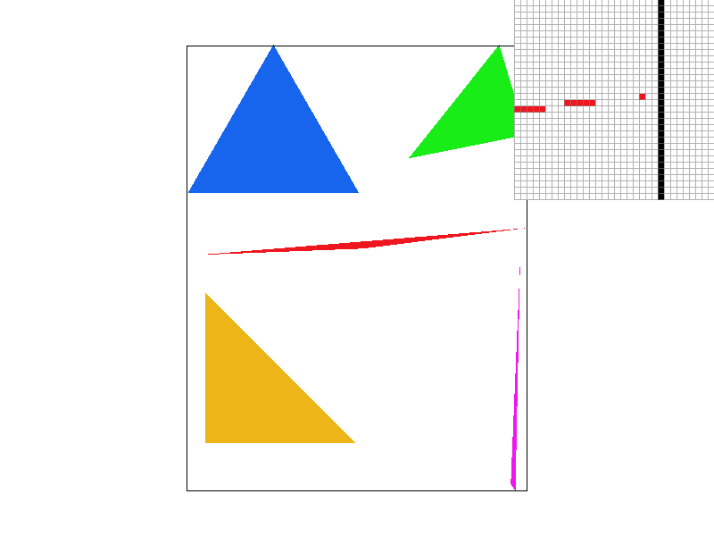
Extra Credit — Incremental Edge Equations
The optimized path avoids recomputing all three edge functions from scratch at every sample. For a fixed subpixel offset, I evaluate each edge once at the start of a row. Moving one pixel in x changes an edge value by a constant amount, and moving one row in y changes it by another constant amount, so the inner loops update the three edge values using only additions. This preserves the same coverage rule while reducing arithmetic in dense scenes.
| Mode | 10-trial average | Relative result |
|---|---|---|
| Baseline bounding-box edge tests | 43.084 ms | 1.00× |
| Incremental edge equations | 7.891 ms | 5.46× faster |
Task 2: Antialiasing by Supersampling
I changed the rasterizer from storing one color per output pixel to storing sample_rate
colors per pixel. For a square sample rate, the samples are arranged on an n-by-n subpixel grid, where
n is the square root of the sample rate. Triangle coverage, interpolated colors, and textures are all
evaluated independently at those subpixel locations. When the framebuffer is resolved, I average all
samples belonging to the same pixel.
Supersampling reduces aliasing because a pixel near an edge no longer makes a binary inside/outside decision from a single point. Instead, its final color approximates the fraction of the pixel covered by the primitive. In the thin red triangle below, 1 spp produces discontinuous red pixels near the tip; 4 and 16 spp progressively recover partial coverage, creating smoother and more continuous edges.
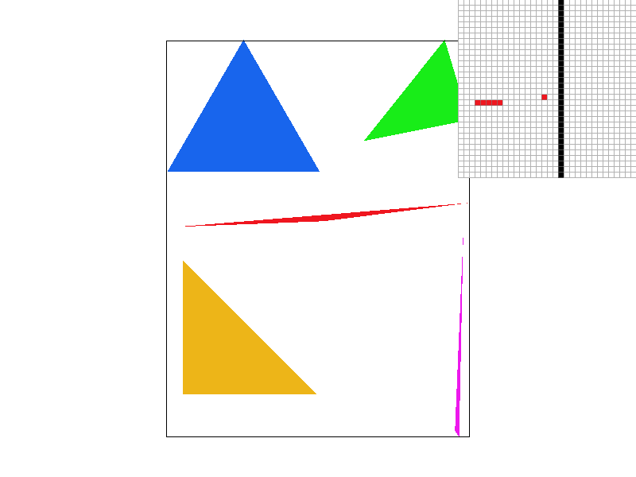
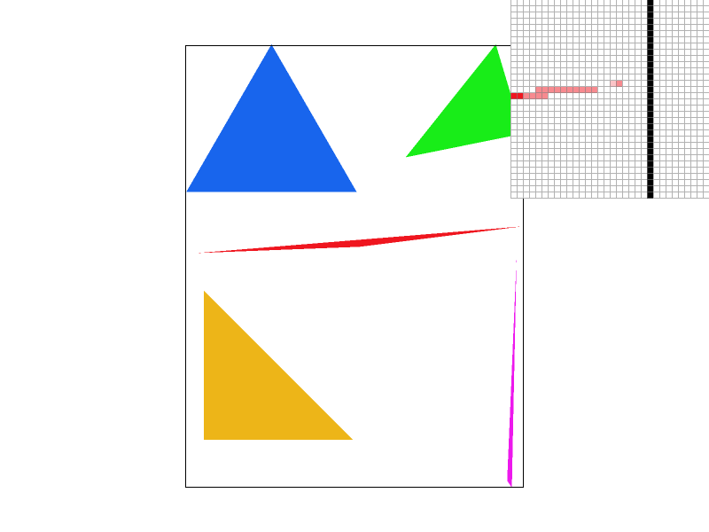
Extra Credit — 4-Sample Rotated-Grid Supersampling
In addition to the regular 2×2 grid at 4 spp, I added a rotated-grid pattern with sample positions (0.125, 0.375), (0.625, 0.125), (0.375, 0.875), and (0.875, 0.625) within each pixel. The sample count is unchanged, but the non-axis-aligned pattern reduces directional bias on thin edges. The comparison scene contains horizontal and shallow diagonal lines so that the difference between the two patterns is visible.
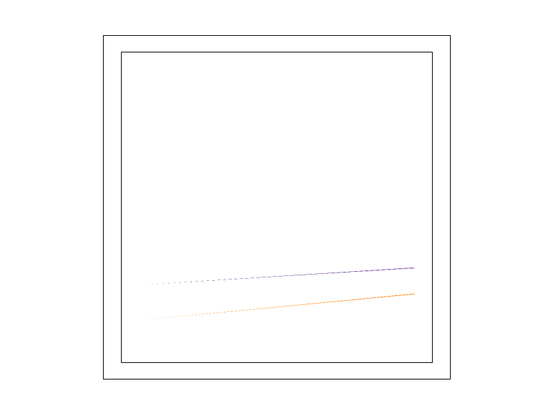
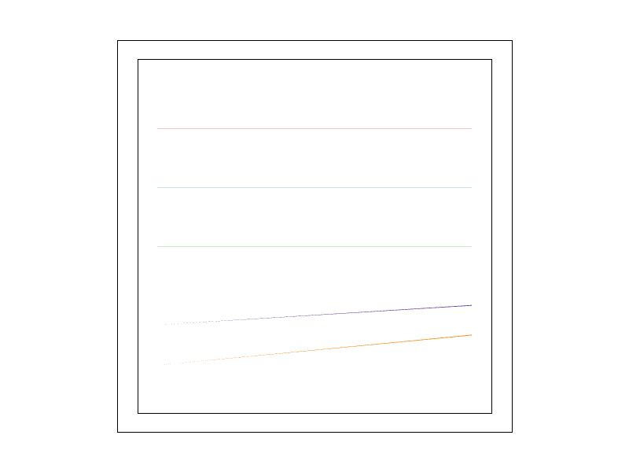
Task 3: Transforms
I implemented translation, nonuniform scaling, and counterclockwise rotation as 3×3 homogeneous
transformation matrices. Translation places dx and dy in the last column;
scaling places sx and sy on the diagonal; rotation converts degrees to
radians and uses the standard cosine/sine 2D rotation block. Because SVG groups compose transforms,
the same matrices also support hierarchical motion of robot parts.
For my custom robot I used a blue-and-gold palette and changed the pose into a wave: one arm is raised
with an open hand, the head is tilted, the other arm rests at the side, and the legs are bent to make
the pose less static. The corresponding source file is
my_robot.svg.

Extra Credit — Viewport Rotation Controls
I added two GUI keys for rotating the entire viewport. R rotates by +5° and
T rotates by −5°. The implementation modifies the SVG-to-NDC matrix by translating the
center of NDC space (0.5, 0.5) to the origin, applying the rotation, and translating back. This
changes the view transformation rather than changing the robot's own SVG hierarchy.
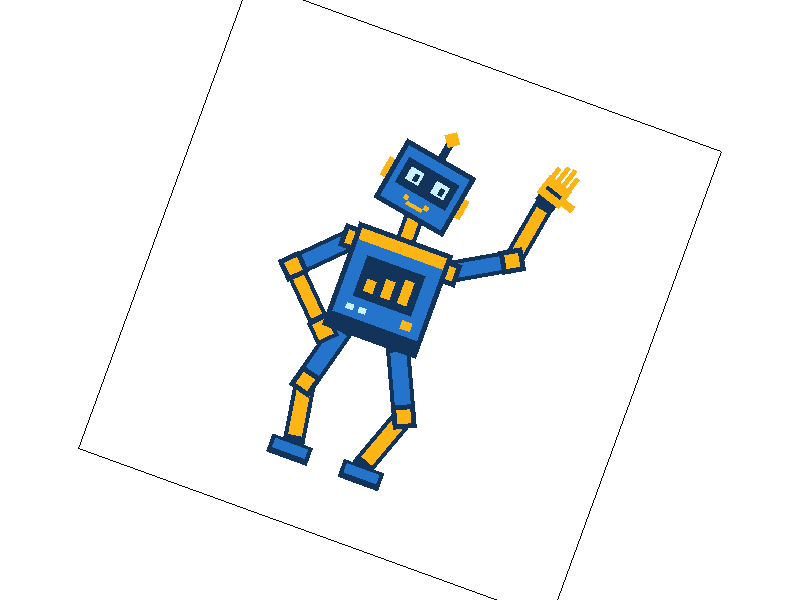
Task 4: Barycentric Coordinates
Barycentric coordinates describe a point inside a triangle as a weighted combination of the three vertices. If the weights are α, β, and γ, then α + β + γ = 1. Inside the triangle all three weights are nonnegative. A weight becomes larger as the point moves closer to its corresponding vertex. I compute the weights from signed edge functions divided by the triangle's signed area.
These weights are useful because any per-vertex attribute can be interpolated with the same formula.
For vertex colors, the rasterizer computes
C = αC0 + βC1 + γC2 at each covered subpixel sample. The diagram below illustrates the
idea: near a colored vertex its weight dominates, while points near the center receive substantial
contributions from all three vertices.

Task 5: Pixel Sampling for Texture Mapping
Texture mapping starts by using barycentric coordinates to interpolate a UV coordinate for every covered screen-space sample. Pixel sampling then answers: given that continuous UV coordinate, which color should be read from the discrete texture image?
For nearest sampling, I clamp UV to the valid range and select the closest texel location. This is fast and sharp but can produce blocky or unstable changes when a sample crosses a texel boundary. For bilinear sampling, I map the UV coordinate between texel centers, fetch the four surrounding texels, linearly interpolate horizontally twice, and then interpolate those results vertically. Bilinear sampling therefore changes smoothly as UV moves across the texture, at the cost of four texel reads instead of one.
The four images below use the same map scene. Bilinear sampling is most visibly better where the texture contains sharp land/water boundaries and small geographic details. The difference is largest when a screen sample lands between texel centers or when the texture is magnified enough that individual texels influence many screen pixels. Increasing supersampling also improves polygon-edge coverage, so 16 spp reduces geometric jaggies in both texture-filtering modes.
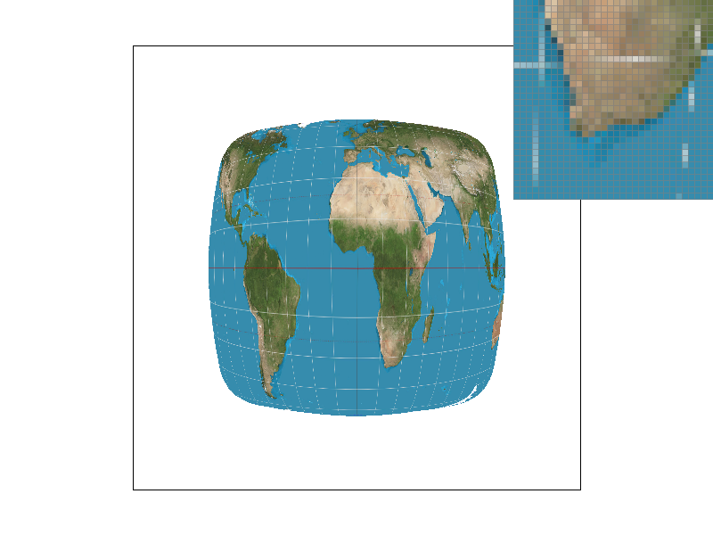
Task 6: Level Sampling with Mipmaps
Pixel filtering chooses how to sample within one texture level; level sampling chooses which resolution
of the texture pyramid should be used. For each screen-space sample, I interpolate UV coordinates at
(x, y), (x+1, y), and (x, y+1). The differences give screen-space UV derivatives. After scaling those
derivatives into full-resolution texel units, I use the larger derivative length as the texture
footprint and compute level = log2(footprint), clamped to the mipmap range.
L_ZERO always samples the full-resolution texture. L_NEAREST rounds the
continuous level to the nearest mip level. L_LINEAR samples the two adjacent mip levels and
linearly blends between them; paired with bilinear pixel sampling, this is trilinear filtering.
| Technique | Speed | Memory | Antialiasing effect |
|---|---|---|---|
| More samples per pixel | Raster cost grows roughly with sample count | Larger sample buffer | Very effective for geometric edge aliasing; also averages texture evaluations |
| Nearest vs. bilinear pixel sampling | Nearest is cheapest; bilinear needs four texel reads | Essentially unchanged | Bilinear smooths interpolation within a mip level, especially under magnification |
| Mipmap level sampling | Level selection adds derivative work; trilinear samples two levels | Requires the mip pyramid (about 4/3 the base texture storage for a full 2D pyramid) | Strongly reduces minification aliasing by matching texture resolution to screen footprint |
For the required custom texture comparison I used a detailed Pokémon XY promotional poster. It contains small city structures, thin outlines, text, and a high-contrast logo, so reductions in high-frequency detail are easy to see. The level-zero results retain the most fine detail and aliasing; nearest-level sampling selects a lower-resolution mip where appropriate, reducing high-frequency variation. Bilinear pixel filtering smooths the transitions within whichever level is selected.
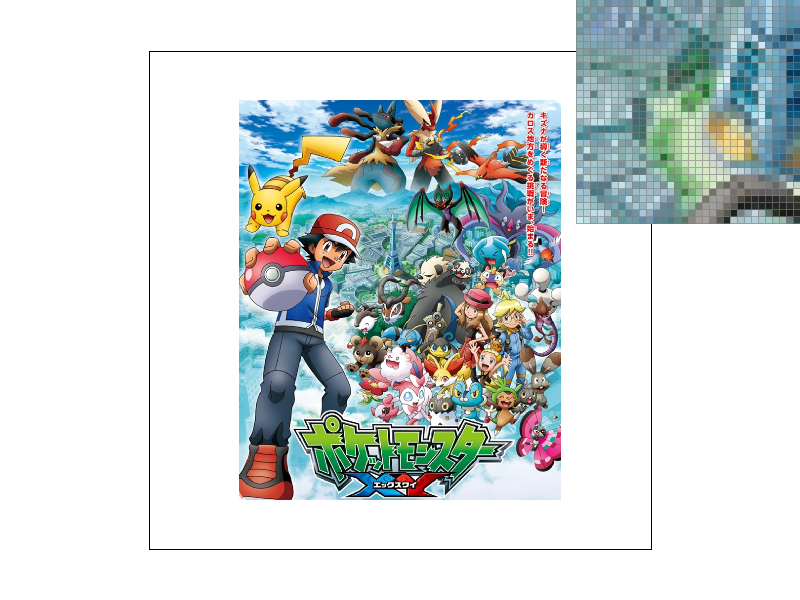
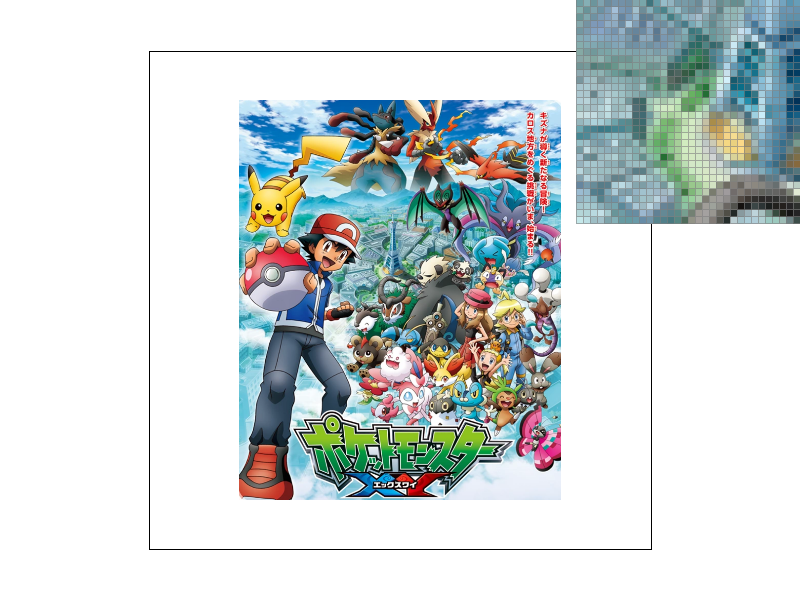
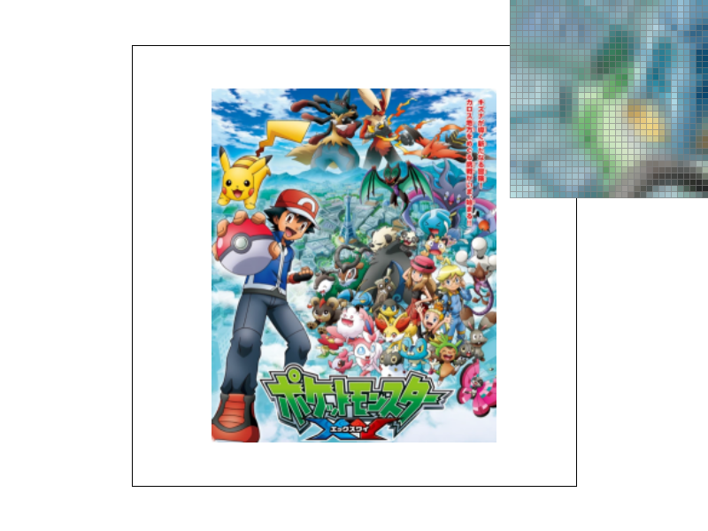
Extra Credit — Anisotropic Filtering
Ordinary mipmapping reduces a 2D footprint to one scalar level, which works well when the footprint is roughly isotropic but can over-blur detail when one texture direction is stretched much more than the other. My anisotropic filter keeps the shorter footprint axis for mip-level selection and averages several taps along the longer axis. The number of taps is based on the major/minor footprint ratio and is capped at eight. Each tap uses bilinear filtering in two adjacent mip levels and blends between the levels, so it behaves like multiple trilinear samples distributed along the long axis.
In the oblique stripe test, nearest and bilinear retain strong high-frequency aliasing. Trilinear greatly reduces aliasing but blurs the thin repeated lines. Anisotropic filtering retains much more of the line structure while still suppressing the directional aliasing, at a higher computational cost.
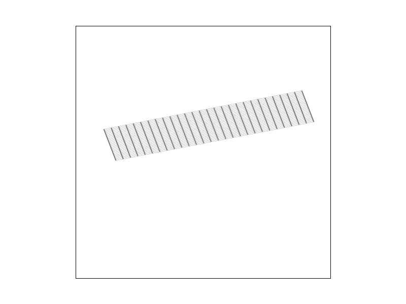
| Filter | 5-trial average | Relative to nearest |
|---|---|---|
| Nearest | 0.774 ms | 1.00× |
| Bilinear | 1.280 ms | 1.65× |
| Trilinear | 2.691 ms | 3.48× |
| Anisotropic | 5.852 ms | 7.56× |
Final Notes
The most useful debugging tool in this assignment was making the sampling pattern visible: skinny triangles exposed coverage errors, the pixel inspector showed subpixel and texel behavior directly, and minified repeated-line textures made level-selection artifacts obvious. The final pipeline keeps the coverage test, attribute interpolation, pixel filter, level filter, and sample resolve stages separate, which made it straightforward to compare methods and add the extra-credit variants.